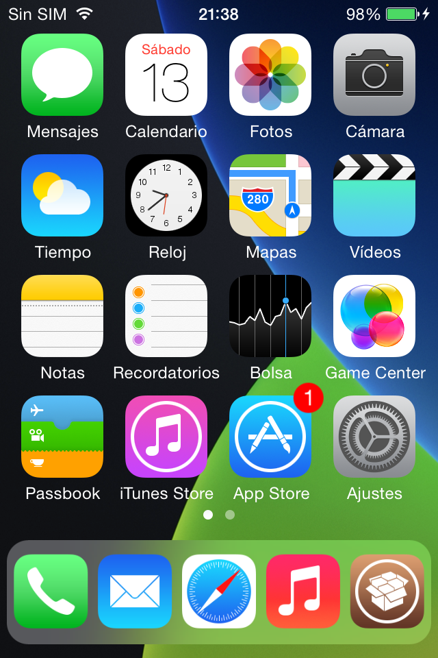
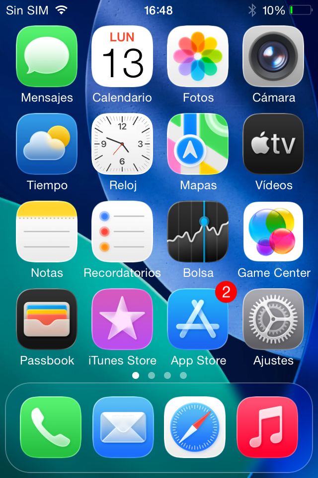
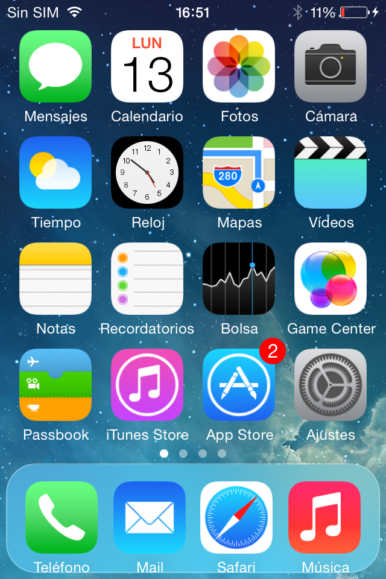
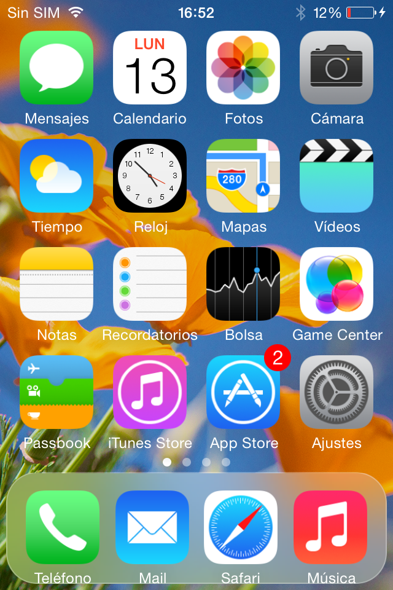

-
Did you ever want to have the iOS 11 floating dock on iOS 7?
Well now you can! And it's as easy as installing this tweak.
Also, if you want iOS 26 look (see first image), you can combine it with Springtomize 3 or with DockShift and Hide Labels.
In this version
-
Version 0.3
- Change the dock corner radius
- Make the dock smaller
- More improvements
Screen Shots
- 
- 
- 
- 